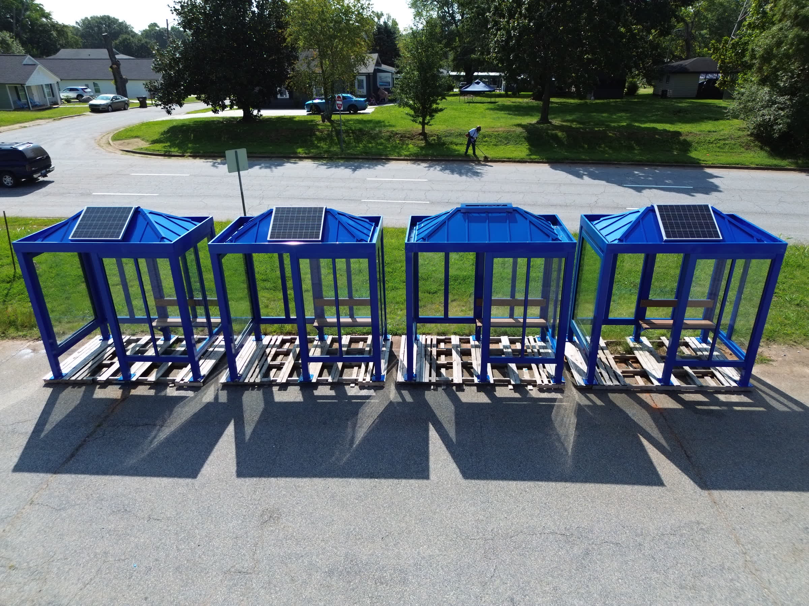
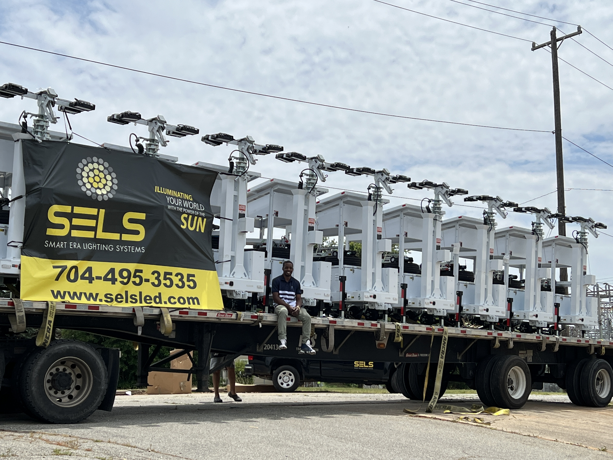

Real installs first. The systems behind the wins second.
Standing solar, transit, lighting, and public-space infrastructure—followed by the capture, proposal, pipeline, quoting, and intelligence systems that moved the work from cold opportunity to field execution.
Field Sequence
Infrastructure resolves into public use.
Four field perspectives move from deployment scale to the places, routes, and riders the work serves.

After Dark
Illuminated transit shelters, documented from the air.
In Service
Transit corridor lighting in active service.
Public Space
Public greenway lighting, aerial perspective.
Night Deployment
Transit infrastructure, operating after dark.
$25M+Active Pipeline
30+States Reached
17Years Learning How Deals Win
12–18Month B2G Sales Cycles
Standing Today
Infrastructure visible from the air.
Original field photography and footage of operating public infrastructure. No mockups. No borrowed logos. Physical proof in its built environment.

Aerial Field Proof
Solar-powered roadway lighting · Active installation
In Service
Transit corridor lighting system · Built context
After Dark
Public-space lighting · Operating proof
Flagship · How the Wins Happen
Bid Command Center
A government procurement intelligence platform for scope detection, product recommendations, funding intelligence, cooperative-clause detection, and proposal organization.
Built from real pursuit pressure and used to produce submitted outputs across multiple transit and government procurements.
Outcome Atlas
Revenue systems with field consequences.
Explore regional proof points where pipeline development, proposal work, procurement navigation, and execution became installed public infrastructure.
Loading proof points
Transit Parks & Trails Public Safety Smart Infrastructure Emergency
From Pipeline to Public Space
The work becomes real in four moves.
Infrastructure begins as scattered signals. A durable system carries those signals into a place people can use.
01
Opportunity
Needs, funding windows, agency priorities, and project signals get organized into a real pipeline.
02
Proposal
The right language, pricing structure, and procurement path turn scattered information into a response.
03
Deployment
What starts in a system moves into coordination, field work, and public infrastructure.
04
Outcome
The final proof is not the quote. It is people safely using the space.
Supporting Digital Systems
The tooling behind infrastructure execution.
These systems were built under live operating pressure: too much information, slow proposal cycles, fragmented pricing, and revenue activity spread across disconnected tools.
Operations Platform
Government Operations Platform
An enterprise operations system with an MRP engine, bill-of-materials tracking, and role-based access—built solo, without a team or dedicated budget.
Procurement Intelligence
Spend Intelligence + Quoter Sync
Connected procurement research, catalog data, and pricing workflows so opportunity analysis and quoting could move with less manual reconciliation.
Revenue Infrastructure
National Government Sales System
Built a government revenue function from zero: opportunity tracking, relationship management, proposal workflows, contract documentation, and a $25M+ active pipeline spanning 30+ states.
Owned Field Media
Infrastructure From the Air
Original drone photography and video of installed solar, transit, lighting, and public-space infrastructure. The portfolio shows real hardware in context—not borrowed logos or stock imagery.
Day / Night
Two views of the same outcome.
Day proves it exists. Night proves it works.
Day / Installed
Installed infrastructure in context.
Night-use field footage Prototype MOV slot ready for MP4 conversion.
Night / In Use
The stronger proof: public space being used after dark.
Proof
Field Evidence
Daylight shows the install. Field evidence shows the scale, setting, and built environment around the work.
Transit infrastructure · Field deploymentSolar lighting · Public environmentPassenger-facing infrastructure · Outcome context
After-Dark Proof
Field footage, where outcomes become visible.
Day proves it exists. Night proves it works.
Media Proof Ledger
A working inventory of field context.
This controlled prototype ledger keeps supporting evidence visible without turning the showcase into an unstructured media dump.
Infrastructure
Field scale, installation context, and public environments.
Infrastructure
Field evidence · Built-environment scale
Public Space
Solar lighting · Streetscape context
Public Environment
Public infrastructure · Site context
Transit / Public Space
Evidence from passenger environments, parks, and public-space use.
Parks
Public space · Community setting
After Dark
After-dark proof · Public space in use
Lighting
Solar lighting · Evening context
Field Presence
Time-based evidence from infrastructure and mobility environments.
Prototype video slot ready.Convert source media to MP4 for final playback.
Field Footage
Infrastructure activity · Time-lapse context
Prototype video slot ready.Convert source media to MP4 for final playback.
Field Footage
Transit environment · Time-lapse reference
Collection Index
Cross-page references keep the complete prototype inventory legible.


.jpg)